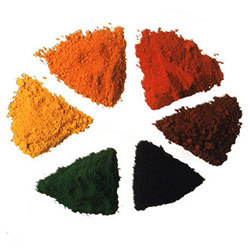
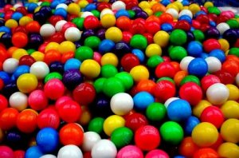

Ce sunt colorantii?
Un colorant este o substanta organica sintetica sau naturala, care are o culoare proprie, si care are proprietatea de a colora substraturile pe care este aplicata (textile, ceramica, piele, hartie, etc.).
Observatii
- Pentru ca o molecula organica sa posede o culoare proprie bine definita, ea trebuie sa includa in structura grupe de atomi, numite grupe cromofore sau cromofori.
- In general, existenta culorii este legata de prezenta dublelor legaturi conjugate intr-o molecula.
- Substantele care contin in molecula lor unul sau mai multi cromofori se numesc cromogene si sunt colorate
- Pentru ca o substanta colorata sa devina si coloranta (sa poata colora la randul ei), trebuie sa contina in molecula, pe langa cromofori si alte grupe, numite auxocrome. Grupele auxocrome imprima substantei proprietatea de a colora, produce totodata o intensificare a culorii si dau o nuanta mai inchisa culorii existente in absenta lor.
Clasificarea colorantilor
Colorantii organici pot fi clasificati dupa provenienta lor in: coloranti naturali si coloranti de sinteza.
1. Coloranti organici naturali
Vrajeala despre ei

2. Coloranti organici de sinteza
Vrajeala despre ei

Concluzii
- Colorantii sunt substante ce poseda culoare proprie si sunt capabili sa confere culoare unor substraturiprintr-un proces de fixare. Ei pot fi naturali sau de sinteza.
- Orice colorant contine in molecula un cromofor si auxocromi.
- Dupa modul de fixare, colorantii pot fi: acizi (vopsesc lana si poliamidele), directi (vopsesc celuloza), de cada (vopsesc bumbacul) si pigmenti care, inclusi in produse peliculogene, conduc la vopsele.
- Colorantii alimentari pot fi naturali sau sintetici si sunt indicati pe etivhetele produselor alimentare sub numere de cod, care urmeaza literei E.